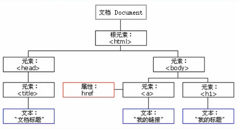

DOM概述
Document Object Model，简称DOM，是javascript表示和操作HTML和XML文档内容的基础API，DOM是一个树状的数据结构

Document可以假设为包含html标签的一个虚拟标签。
一般地，节点至少拥有nodeType、nodeName和nodeValue这三个基本属性。节点类型不同，这三个属性的值也不相同
常用的三类节点及其nodeType属性值
元素节点 Node.ELEMENT_NODE(1)
属性节点 Node.ATTRIBUTE_NODE(2)
文本节点 Node.TEXT_NODE(3)
兼容性问题：在IE678中指节点一般都特指元素节点，而在火狐谷歌IE9+中非常强调节点类型，故在原有的名词上加上一个Element单词才特指元素节点。
DOM节点中，每个节点都有相关的属性来访问一些特殊的节点
3.1、父节点parentNode
3.2、子节点（兼容性写法）
第一个子节点=父节点.firstElementChild||父节点.firstChild
最后一个子节点=父节点.lastElementChild||父节点.lastChild
所有子节点集合=父节点.childNodes(W3C标准，包括所有类型的子节点,可以通过nodeType属性筛选子元素节点)
所有子元素节点集合=父节点.children(非W3C标准，在高版本浏览器中仅获取所有子元素节点，但在IE678中会额外获取注释节点)
3.3、兄弟节点
下一个兄弟节点=当前节点.nextElementSibling||当前节点.nextSibling
上一个兄弟节点当前节点.previousElementSibling||当前节点.previousSibling
获取所有兄弟节点=当前节点.parentNode.children
Document对象是Window对象的组成部分，可以使用全局变量document或window.document来引用Document对象，用于访问和动态地操作DOM节点。
4.1、选取文档节点
4.1.1、使用document内置方法
根据标签名：document.getElementsByTagName("标签名"); 返回NodeList对象
根据类名：document.getElementsByClassName("类名"); 返回NodeList对象（老版浏览器没有此方法）
根据id属性：document.getElementsById("id值"); 返回单一元素
根据name属性：document.getElementsByName("name属性值"); 返回NodeList对象
根据选择器：document.querySelector("选择器") 返回匹配到的第一个元素
document.querySelectorAll("选择器") 返回NodeList对象
选择器的写法与style标签中的写法一致
4.1.2、使用document内置属性直接获取:document.head、document.body、document.title...
document.cookie可以获取Cookie信息
4.1.3、document.all[]
document.all[0] 返回文档中第1个元素
document.all["nameId"] 返回文档中id或name为nameId的元素集合
document.all.nameId 同上
document.all.tags("div") 返回文档中div元素集合
document.all.tags("div")[0] 返回文档中第1个div元素
4.2、创建节点：document.createElement("标签名")
将节点插入文档:
将新节点插在某个节点结束标签之前：父节点.appendChild(新节点)
将新节点插在某个节点之前:父节点.insertBefore(新节点，参照节点)
补充：doc创建节点碎片容器方法document.createDocumentFragment();
当需要创建大量节点时，可先创建一个节点碎片容器，将新建节点插入到容器中，然后再将容器插入到父节点中
效果等同于直接将所有新节点直接插入到父节点中，容器不会实际插入。好处是节省计算机资源(理论上)。
4.3、删除节点
借刀杀己：要删除的节点.parentNode.removeChild(要删除的节点)
自杀:要删除的节点.remove()
4.4、复制节点
新节点=要复制的节点.cloneNode(参数) ;
参数是布尔类型，值为true代表深拷贝（拷贝当前节点以及其所有子节点），值为false代表浅拷贝(只拷贝当前节点)
HTML元素节点的属性由一对键值对组成，这些属性都是可读写的。
5.1、通过点操作符或者中括号操作符来获取和设置标准属性
元素的标准属性名和HTML标签属性名大部分是一致的(除了标签属性class变成了className)
如：var nId=node.id、node.className="test"、node["src"]="http://www.baidu.com";
此外，可以通过attributes对象间接获取节点属性
Node具有一个attributes只读属性，它是一个伪数组对象，存储着元素节点的所有属性，可以通过索引和属性名来读取里面的属性值
对于非Element类型的节点，其值为null
5.2、通用方法，可获取和设置标准属性和非标准属性，甚至是自定义属性(IE67只能get到用set方法设置的Attribute)
获取：node.getAttribute(属性名称)
设置：node.setAttribute(属性名称,属性值)
删除:node.removeAttribute(属性名称)
node.value：访问单标签文本内容
node.innerHTML：访问双标签内的所有内容，包括文本内容和子标签
node.innerText:访问双标签内的文本内容
node.text:访问内联script标签里的内容